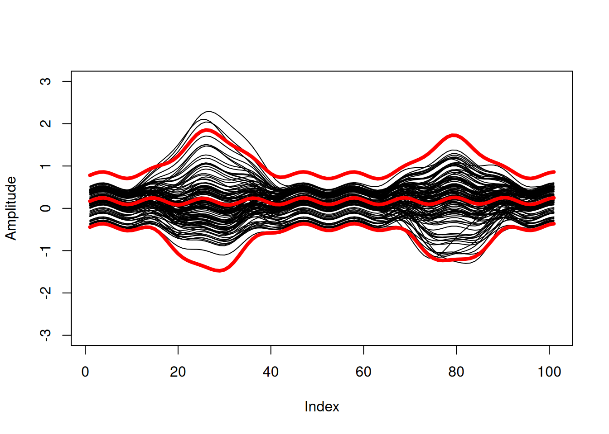

Daniel Koska
Data; Science; Biomechanics
Welcome
This is intended to be a collection of ongoing and past projects, papers, coding adventures and whatever else seems worth sharing. This blog’s running on GitHub Pages and is written using Quarto, (hopefully) making it easy to share code examples. And hey, if you spot something cool, you can dive straight into the GitHub repo and start playing around with it.
Software contributions
Click to expand
Functional Bootstrapped Bands (FunBootBand)
Background story
Click to expand
The whole journey began when I started thinking about ways to adequately characterize differences between joint angles calculated from different measurement systems. In my case, I wanted to compare joint angles from a 3D camera system and an inertial measurement unit system. In terms of choosing appropriate statistics, there are some good reads about what not to do and how to implement methods for discrete data. See, e. g., the highly cited work by Bland and Altman (e.g the papers form 1986, or 2007), who introduced the so called Limits of Agreement (LoA) approach. There’s much less literature, however, on how to handle continuous differences between two measurement systems.
One paper that caught my attention is the article by Røslien et al., (2012), which describes a way to expand the LoA method to continuous data by using a functional approach. The paper in a nutshell: Continuous data (aka curves) are approximated using functions to calculate a functional counterpart of the LoA. The problem, however, is that the approach described in the paper is not entirely functional. Rather, the actual calculation of the Functional Limits of Agreement is carried out for each individual point of the previously determined functional curves (for details see the implementation in the utilized R package fda by James Ramsay). Strictly speaking, this turns the whole idea of using functions on its head and results in functional LoA (or more generally: statistical bands) that are likely too narrow (Koska et al., 2023). Applied to my original problem of describing continuous differences between measurement systems, this would mean that the random measurement error is likely underestimated.
Another paper that describes a functional approach is the one by Lenhoff et al. (1999), i.e., curves/time series are approximated using functions just like in Røislien et al. (2012). The paper is not specifically about quantifying differences between measurement systems, but more generally about the construction of statistical bands (more precisely confidence and prediction bands) for biomechanical curve data. The actual hack here is that the distribution of curves is estimated by bootstrapping the coefficients of the curve functions. This means that bands are no longer calculated pointwise, but the entire curve is included in the calculation. The method in Lenhoff et al., to the best of my knowledge, is based on the work of Olshen, Biden, Wyatt, and Sutherland from the 1980s (see, for example, Sutherland et al., 1988; Olshen et al., 1989).
Sutherland, D., Olshen, R., Biden, E., Wyatt, M., 1988. Development of Mature Walking. Mac Keith Press. Olshen, R.A., Biden, E.N., Wyatt, M.P., Sutherland, D.H., 1989. Gait analysis and the bootstrap. Ann. Statist. 17 (4), http://dx.doi.org/10.1214/aos/1176347372.
Olshen, R.A., Biden, E.N., Wyatt, M.P., Sutherland, D.H., 1989. Gait analysis and the bootstrap. Ann. Statist. 17 (4), http://dx.doi.org/10.1214/aos/1176347372.
As you can see, the method is not exactly new. I was all the more surprised that I wasn’t able to find a coded version of the algorithm online. This forced me to implement the algorithm from scratch, which I did using R and the formulas in the appendix of Lenhoff et al. (1999). Extremely helpful at this point was the Matlab code that a former colleague at our institute, Dr. Doris Oriwol, kindly provided me with. Her code allowed me to cross-check my implementation and correct a couple of mistakes. For instance - if I remember correctly - I struggled to implement the correction facor that adjusts the width of the bands to the desired confidence level. Not sure if I’d gotten it right without Doris’ help. So, full credit to Doris!
As a side note: I am very grateful for people who have the know-how and the time to review the code. The description in the Lenhoff paper is rather brief, and we were not always 100% sure whether we had correctly implemented the algorithm. Further opinions and possible corrections are very welcome.
I’m sure other researchers have been here before and would have loved to read a coded version of the algorithm. My hope is that sharing our code is a major pain release in that regard and will lead to more people adopting the method. As indicated by Lenhoff et al., functional statistical bands are not limited to the description of differences between measurement systems, but are useful wherever the variation of curve data needs to be analyzed statistically. This includes a ton of important tasks such as estimating population parameters, indicating precision, assessing statistical significance, comparing groups, forecasting future observations, quantifying uncertainty in predictions etc..
In the course of implementing the method, I noticed something else: The examined bootstrap methods (including that of Røislien) have implemented a naive bootstrap, meaning they assume independence of the curves in the dataset. Accordingly, the papers suggested to include only one curve per subject in the bootstrap. From a methodological point of view, this is somewhat problematic since it ignores the intraindividual variance component. In the context of investigating measurement errors, for instance, this means that the variance across repeated measurements within a person is not taken into account. This may further aggravate the problem of bands being too narrow.
We therefore extended the functional bootstrap bands to include a possibility to account for repeated measurements (i.e., dependent curves). This was realized using the two-stage or double bootstrap described in Davison and Hinkley (1997), in which subjects (including all of their curves) are sampled with replacement in the first stage, and one curve per subject is drawn without replacement in the second stage. In addition to sharing our code, this implementation of the two-stage bootstrap is - IMHO - the main contribution of ‘our’ FunBootBand method. A systematic comparison of the method with other methodological approaches for characterizing continuous differences between two measurement systemes (pointwise LoA, Functional LoA, Functional Bootstrapped bands) can be found in in Koska et al. (2023). Here, we analyzed the coverage probabilites of these models in different error scenarios (simulated and real-world data) and found that the FunBootBands showed superior performance.
What follows are various versions of the functional bootstrap bands (ongoing development) in different programming languages. The R code has already been published as a (devtools) package, and I plan to add it to CRAN at some point as well. In addition, I’m currently porting the code to Python. If time permits and I can delve into Julia, this may be next in line. Besides porting the function to different languages to improve the accessibility, my main goal is to increase code efficiency and reduce computation times - after all, bootstrapping is quite a computationally intensive. In R this may be done using RCpp, a C++ version. In Python, there is Cython, which should significantly reduce execution time.
FunBootBand R
Click to expand
The FunBootBand package contains a function to generate statistical (prediction or confidence) bands from curve data using a functional approach and bootstrapping.
The development version of FunBootBand can be installed from GitHub with:
devtools::install_github(“koda86/FunBootBand”)
FunBootBand Python
Click to expand
The first alpha-ish version is available, see here: https://github.com/koda86/FunBootBand-python
My TODO list still includes a bunch of items, such as extensive testing … I’m getting there. Learned a whole lot about Python in the process as well so far.
FunBootBand RCpp
Click to expand
On my TODO list.
Effort to compress
Click to expand
While trying out different complexity measures, I stumbled upon the ‘effort to compress’ (ETC) method introduced in (Nagaraj et al., 2013). ETC is a complexity measure for which code was originally presented as Matlab and Python Code. This repository contains an R implementation of the algorithm.
effort2compress (GitHub)
See also the website of Nithin Nagaraj for the Matlab and Python versions: Website Nagaraj
Python implementation: Github
Identify duplicates in metadata (DupliCheck)
Click to expand

I was recently conducting a meta-analysis to get an idea of the effect of digital physiotherapy for the treatment of various orthopedic diseases. For this, I used Pubmed, Cochrane, BASE (Bielefeld Academic Search Engine) and Embase, which resulted in large csv files containing metadata from the identified scientific articles. This metadata includes paper titles, authors, and the DOI, among others. Not going to talk about the pain of designing adequate search strings and exporting these articles here …
Before deciding which papers to include in the meta-analysis, I needed to identify duplicates, i.e., papers that appeared more than once. This seems like a fairly straightforward job, but, as usual, the devil is in the detail. This probably explains why I wasn’t able to find a suitable R function for the job (though, to be honest, I didn’t invest an awful lot of time searching).
One obvious candidate, the base function duplicated(), only works on exact copies of a string and fails if even a single character is off. This happens, for example, when author names are written differently across databases. For instance, the author “Çelik” is not the same as “Celik.” Another issue is that two distinct papers can have identical titles and the same authors (in a different order). This should be discernible from their different DOIs, but DOIs are not always available and often come in various formats. The list of complications goes on, making the task more complex. To spare others from the same pain, I packed everything into a small R package called DupliCheck.
The package contains a single function called dupliHunter. dupliHunter takes a data frame with (at least) title, author, and DOI columns. It also includes a threshold parameter to possibly fine-tune the allowed similarity between titles (calculated using stringdist::stringdistmatrix with the Jaccard distance method).
Here’s how you can use the package:
library(usethis)
library(devtools)
# devtools::install_github("koda86/DupliCheck")
library(DupliCheck)
load("~/tmp/data.RData") # Example data; load your own data here
duplicates <- dupliHunter(data,
title_col = "Title",
author_col = "Authors",
doi_col = "DOI",
threshold = 0.03)The current version of the function works decently. I haven’t quantified Type I and II error rates so far, but my experience from working with several datasets and the feedback from colleagues suggest that errors are minimal. I’m also optimistic about the function’s ability to generalize across data from different search engines since the tested files represent data from commonly used sources.
Computational cost and execution speed were issues with my initial (simplistic) loop-based approach. I did some optimzation that included preprocessing titles to escape special characters, or the use of parallel processing. This reduced the execution time for a 4191-row test file significantly (down from 2856 s to about 952 s). It’s not lightning fast, but it’s acceptable for vanilla R code. I hope to port the code to C++ to speed up processing time for future projects. We’ll see …
Disco Diffusion Music Video
Click to expand
This post is about a (‘AI’-generated) music video that I created for my Band ICTRL. Before I go on with the nerdy details, you should check out the video first:
The video illustrates our song Dead Horse, which is the first of a bunch of singles we are going to drop this year. The idea to create a video like this was inspired by a Reddit post about a recent video by one of my favorite bands: King Gizzard and the Lizzard Wizard (the song is called Iron Lung). The post provided some insights into how the video was created, e.g. this quote from user No_Stay2400:
“From Spod, the guy who made it (in a Reddit post back when it came out): Cheers, yeah it was 2 months of trial and error, and using a bunch of different techniques alongside the newest diffusion programs as they rolled out. It was all mapped out frame by frame to work with the music, trying see if I could illustrate the feeling of the music through the video. At times it feels like driving a bus from the backseat, but is amazing when it all comes together. The hardest thing is steering it away from the generic look that AI art can get. Anyway, thanks.”
The main tool that caught my interest was Disco Diffusion, a neat open-source AI tool for generative art. Imagine typing in some text prompt and getting intricate pieces of visual art (for all “future” readers of the last sentence: Imagine a world where ‘AI’ was a new and exciting thing). Quickly, the idea was born to create a low-budget video where the prompts and thus the video sequences fit the lyrics of the song.
Disco Diffusion was developed using Google Colab, which is a free, cloud-based Jupyter notebook environment provided by Google. If you are a data scientist or machine learning practitioner, you have probably heard of it. Being cloud-based, Colab requires no setup or installation. Users can start coding immediately in their web browser. Colab supports Python, so it was easy to read and understand the code. That bein said, there’s absolutely no need for any programming skills, since there are empty fields for all relevant parameters, prompts etc. in the notebook.
Colab also provides access to powerful computational resources, including different GPUs and TPUs, which are essential for training deep learning models. There is a certain amount of free resources (so called compute units) one can use to test the setup and get some early images. That, however, is rather slow and these provided credits will be exhausted soon. So it makes sense to switch to the Colab Pro, which cost me roughly 50 Euros or so for a month. I know there’s also a local version of Disco Diffusion, but I didn’t consider my computation ressources enough to make a video in reasonable time, so I abandoned that for the moment. This may be something to investigate more in the future, especially since I’m not particularly keen on throwing my money towards Google. Well.
The Colab notebook itself is pretty much self-explanatory. One has to run a bunch of cells to check GPU status, prepare folders and connect a (cloud) drive, import dependencies and set up runtime devices, define necessary functions and so on. The first interesting part are the diffusion and CLIP model settings. I watched a bunch of Youtube videos such as this one where they explained which settings worked for them. Copying mostly from that, I used a “512x512_diffusion_uncond_finetune_008100” diffusion model and checked the ‘use_secondary_model’ box.
The next big thing are the settings. Here I set the number of steps to 150. this values, I believe, is responsible for the amount of details in a single frame. I further set the picture dimension to [1280, 768]. For all the rest, I stuck with the default settings.
For the animation settings, I chose the 2D animation mode, checked the ‘key_frames’ box, and set ‘max_frames’ to 3500. I calculated the number of frames (3500) to make the length of the video match the length of the song at the chosen framerate of 12 fps. To create the movement you can see in the video, I changed the following parameters (leaving the rest at default):
interp_spline = ‘Linear’
angle = “0:(1.03)”
zoom = “0:(1.03)”
translation_x = “0:(0)”
translation_y = “0:(0)”
translation_z = “0:(10.0)”
Initially, I changed the values for the 3D rotation as well, which caused some hard to pin down errors. Took me way too long to figure that out and caused some real frustrations along the way.
Next in line was the design of the prompts. First of all, I spent a LOT of time figuring out which style I would like to have. The YouTube video linked above, created by a guy called Doctor Diffusion, used pictures from the Polish artist Zdzisław Beksiński, famously know for his dystopian surrealism, and the American artist Lisa Frank, who is known for rainbow and neon colors and stylized depictions of animals, including dolphins, pandas, and unicorns. I threw in some Edvard Munch, who’s paintings I admire since being in the Munch museum in Oslo, and I really liked what I saw. Here are the exact prompts I used:
text_prompts = {
0: [“A single horse by Zdzisław Beksiński and Lisa Frank, Trending on artstation.”],
216: [“A single ear by Zdzisław Beksiński and Lisa Frank, Trending on artstation.”],
300: [“A single cloud by Zdzisław Beksiński and Lisa Frank, Trending on artstation.”],
300: [“A burning cloud by Zdzisław Beksiński and Lisa Frank, Trending on artstation.”],
384: [“A single horse by Zdzisław Beksiński and Lisa Frank, Trending on artstation.”],
468: [“A single running woman by Zdzisław Beksiński and Lisa Frank, Trending on artstation.”],
684: [“A single vomiting woman by Zdzisław Beksiński and Lisa Frank, Trending on artstation.”],
720: [“A single beating heart by Zdzisław Beksiński and Lisa Frank, Trending on artstation.”],
888: [“A single race horse by Zdzisław Beksiński and Lisa Frank, Trending on artstation.”],
1080: [“A single curtain by Zdzisław Beksiński and Lisa Frank, Trending on artstation.”],
1164: [“A single crow by Zdzisław Beksiński and Lisa Frank, Trending on artstation.”],
1212: [“A picture of a broken spine by Zdzisław Beksiński and Lisa Frank, Trending on artstation.”],
1320: [“A picture of a torch by Zdzisław Beksiński and Lisa Frank, Trending on artstation.”],
1380: [“A single running woman by Zdzisław Beksiński and Lisa Frank, Trending on artstation.”],
1560: [“A single vomiting woman by Zdzisław Beksiński and Lisa Frank, Trending on artstation.”],
1656: [“A single running horse by Zdzisław Beksiński and Lisa Frank, Trending on artstation.”],
1860: [“A single bass player by Zdzisław Beksiński and Lisa Frank, Trending on artstation.”],
1980: [“A single running horse by Zdzisław Beksiński and Lisa Frank, Trending on artstation.”],
2100: [“A single running woman by Zdzisław Beksiński and Lisa Frank, Trending on artstation.”],
2280: [“A single vomiting woman by Zdzisław Beksiński and Lisa Frank, Trending on artstation.”],
2340: [“A picture of a screaming woman in the background by Zdzisław Beksiński and Edvard Munch, Trending on artstation.”],
2400: [“A picture of a thunderstorm with fire in the background by Zdzisław Beksiński and Lisa Frank, Trending on artstation.”],
2460: [“A picture of a screaming woman in the background by Zdzisław Beksiński and Edvard Munch, Trending on artstation.”],
2520: [“A single vomiting woman by Zdzisław Beksiński and Lisa Frank, Trending on artstation.”],
2700: [“A picture of a horse running through a thunderstorm by Zdzisław Beksiński and Lisa Frank, Trending on artstation.”],
2940: [“A picture of a dying horse by Zdzisław Beksiński and Lisa Frank, Trending on artstation.”],
3060: [“A picture of a golden ship in the sea by Zdzisław Beksiński and Lisa Frank, Trending on artstation.”],
3144: [“A picture of a dying horse by Zdzisław Beksiński and Lisa Frank, Trending on artstation.”],
3204: [“A picture of a horse in hell by Zdzisław Beksiński and Lisa Frank, Trending on artstation.”],
3276: [“A picture of a horse by Zdzisław Beksiński and Lisa Frank, Trending on artstation.”],
3372: [“A picture of a rainbow by Zdzisław Beksiński and Lisa Frank, Trending on artstation.”]
}
For the actual creation of the video, I set the ‘blend’ to 0.5 and always started at the ‘final_frame’ when I had to rerun the script. This happened quite a few times, for instance because of errors or when I ran out of computing units.
Finally, after the animation was, it required some minor editing to overlay the audio track onto the video. Et voilà, a new video was born.